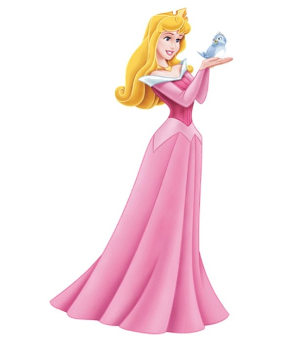

Considerando esto me pregunto, ¿cómo demonios es que las princesas Disney tienen esos cuerpazos, si en realidad todas son niñas? Blanca Nieves tiene 14; Jasmín tiene 15; Aurora, Ariel y Mulán, 16, ¿qué les daban de comer en sus palacios?
Para contestar las preguntas anteriores es necesario tomar en cuenta el año en el que las princesas Disney “nacieron”. Porque sí, todas ellas están basadas en cuentos muchísimo más viejos que las propias películas, por lo que la empresa del ratón Miguelito las representó de una manera distinta. Les confirió atributos que hasta ahora las definen y que, para bien o para mal, contribuyeron a definir a varias generaciones de mujeres.
Aunque mi mamá se encargó de decirme que “ésas son solo historias, en la realidad no existen príncipes ni princesas”, siempre fui fan del mundo Disney. Por lo que haré uso de mi amplio conocimiento en la materia para explicar las tres olas de princesas (saca un libro trukutrú y se pone los lentes).
Es importante considerar que ellas son productos culturales, es decir, que están constituidas con características del tiempo y espacio en el que fueron configuradas. Es algo así como cuando tu abuelita te cuenta de su juventud. Ella no tenía Netflix ni sabía de memes, simplemente porque no es algo que existiera en su época. Con el pasado en cuenta, podemos comenzar nuestro recorrido histórico.

LA PRIMERA OLA: GUAPAS Y VULNERABLES
En esta etapa están las primeras princesas que Disney creó. Probablemente son las más emblemáticas, pero también las más cuestionadas. Su búsqueda es el amor y sacrifican grandes cosas por él, lo que da como resultado actitudes ilusas. El final feliz de sus historias es cuando el príncipe decide casarse con ellas.
Blanca Nieves y los siete enanos llegó a la pantalla grande en 1937. Su amigueta Cenicienta en 1950. La bella durmiente en 1959 y La Sirenita –que dicen que no es tan su amigui– en 1989.
LA SEGUNDA OLA: ACUERPADAS PERO REBELDES
La segunda ola de princesas llega en la década de los 90. La primera en la lista es Bella de 1991, Luego Jazmín en 1992, Pocahontas en 1995 y Mulán en 1998.
Ellas comienzan a cambiar sus actividades y roles. Poco a poco abandonan el rol de doncellas en peligro para convertirse en miembros activos de sus historias. Bella es una muchacha que lee, cuida a su papá y se niega a que Gastón le “eche los perros”. Mulán decide ir a la guerra en lugar de su padre y salva a China. Pocahontas defiende sus raíces. Jazmín no se quiere casarse con el mago rico y desobedece a su padre; por no decir que tiene a un tigre como mascota.
LA TERCERA OLA: NIÑAS VALIENTES
Finalmente, viene la última y más reciente ola de princesas. Todo comienza en 2009 con Tiana en La princesa y el sapo, Rapunzel en 2010, Mérida en 2012 y la más reciente Moana de 2016. Para ser sincera, ellas son mis favoritas.
Salvo Tiana, un rasgo que comparten entre sí las antes mencionadas radica en que las sociedades en las que están inmersas no les permiten salir a conocer el mundo, limitándolas en todo el sentido de la palabra; sin embargo, dichas limitaciones serán el motor para vivir la aventura. En Enredados, Valiente y Moana las princesas exploran las relaciones el mundo por sí solas, ya no se limitan a ver qué onda con el galán.